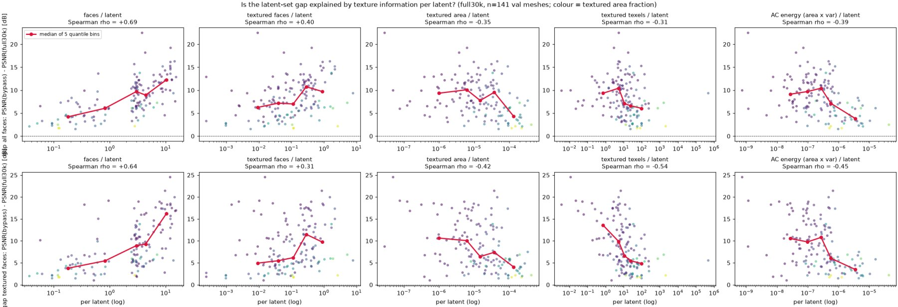
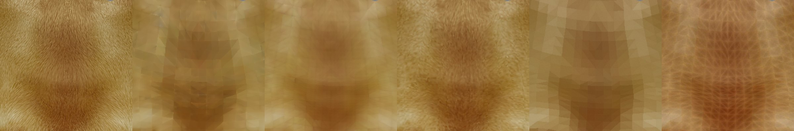
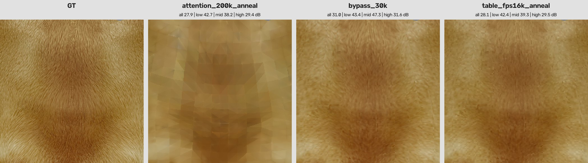
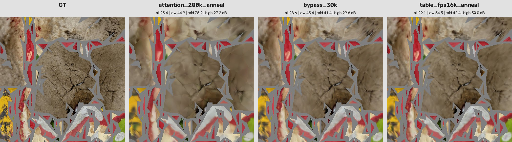

旧模型最佳（200k + 退火）
25.89 dB
完整 val 前 32 个，area-PSNR
表 latent（50k + 退火）
28.83 dB
+2.94 dB；面 28.15，中位数 35.95
interp 上界（28 点输入）
29.08 dB
差 0.25；推理时锚点加倍到 32768 → 29.44
舞蹈面具细节区
29.1 dB
旧模型 25.4，旁路 28.6
下一个上界（91 点输入）
41.6 dB
Slurm 36202557 训练中
一句话结论：VecSet 式 latent 把一片邻域"概括"成一个向量，再凭相似度和距离去"找"信息；对几何场可以，对纹理不行，因为相邻面的颜色互不相关，找的过程就是平均。把 latent 改成按几何地址"登记"的表（写入和读取都按下标），面内细节就保住了。
证据链：排除容量、KL、自注意力、数量与对齐 → 注意力足迹与线性探针定位到"写入打散、读取平均" → 三类"找"（注意力、池化、MLP）全部停在 const 水平，唯一有效的改动是按下标读取 → 表 latent 在小规模和全规模上都逼近上界。
1. 这一页和上一页的关系
上一页第 6 节结束在：格点 IO 旁路（没有 latent）达到 interp 上界 31.1 dB，而接上 8192 × 64 的 latent 后掉回 23 dB，和旧 IO 一样；损失发生在"面 → latent → 面"这一段，原因未明。这一页从那里接着讲：先排除，再定位机制，再构造出能保住细节的路径，最后给出新设计和它的结果。
所有数字除特别说明外均为 held-out val 的 area-weighted PSNR（dB），三个参照：const（每面涂平均色）、interp（28 个输入点线性插值到 91 点的上界）、旁路（格点 IO 直连、无 latent 的实测上界）。
2. 第一阶段：排除（10 月 14 日）
| 假设 | 检验 | 结果 | 结论 |
|---|
| latent 容量不够 | 宽度 64 → 256；差距与纹理信息量的秩相关 | 零收益；差距与纹素数负相关 (−0.54)，与面数正相关 (+0.69)，控制面数后信息量相关为零 | 不是容量 |
| 低通平滑 | 用真值做高斯模糊去拟合模型输出 | 最佳 σ 在 0 到 1 纹素之间 | 不是简单的空间平滑 |
| 丢在面内还是面间 | 按 DC / 低频 AC / 高频 AC 分频段 | 三个频段一起丢；细网格丢在 DC（面间），粗网格丢在面内 AC | 丢的是“面级分辨”，与三角剖分尺度绑定 |
| latent 数量不够、锚点没对齐 | oracle：一面一个 latent，锚点放在面质心；对照 FPS 8192 | oracle 三个面数档全部落后对照 | 不是数量，也不是对齐 |

141 个 val mesh。横轴是每个 latent 摊到的量，纵轴是旁路与完整模型的 PSNR 差距。只有"面数"单调（左列），"有纹理面积、纹素数、AC 能量"全部负相关：信息越少的 mesh 只要面多，差距越大。丢的不是内容，是按面寻址。3. 第二阶段：定位机制（10 月 14 日晚）
| 检验 | 结果 | 推论 |
|---|
| 注意力足迹 | 解码时每个面读 5 到 12 个 latent，自己最近的只占 0.19（oracle 中专属 latent 占 0.51）；编码时 oracle 的一个 latent 聚合约 170 个面 | 读写都是跨面加权平均 |
| 线性探针 | oracle 的 latent 里能线性读出面的平均色（25 到 33 dB），模型自己只解出 17 到 19；FPS 模型最近的 latent 里读不出（≈ 均值基线 12.5） | oracle：信息在、读不回；FPS：写入时就已打散 |
| 推理时硬掩码只读自己的 latent | oracle 不训练整体 +1 dB、DC +2.5 dB；FPS 模型掉到 14 dB | 跨面读取是因果性的 |
| 掩码微调 5k 步 | 停在 const 水平 23.3；latent 里只有 DC，28 点格点线性读只有 15 dB | 读修好后暴露出写入也丢 AC |
4. 第三阶段：构造能保住细节的路径（10 月 15 日）
在 ≤ 8192 面的子集上，每个变体训 5000 步，逐项替换"面 → latent → 面"的写法和读法。前七行都把"信息放在哪、从哪取"交给网络去决定，全部停在 const 水平；只有最后两行按几何下标读取。
| 变体 | 面积 PSNR | 排除了什么 |
|---|
| Voronoi 固定归属，格子内池化写入，MLP 读最近 4 个 latent | 21.7–22.1 | 固定归属本身不够 |
| 同上，去掉自注意力、256 维、无 KL | 21.7 | 自注意力、宽度、KL 不是主因 |
| 槽位无损写入 + MLP 读 | 21.9–23.1 | 写入无损也不够 |
| 一面一格 + 槽位写入 + 1024 维 + 只读自己的 latent | 22.0 | 路径上零混合仍丢 5 dB：读取无法“认出”自己那一块 |
| 槽位写入 + 旧的注意力读取 | 20.0 | 注意力同样读不出槽位里的块 |
| 一面一格 + 按下标对齐读（MLP） | 24.9 → 25.4 (10k) | 对齐是唯一有效的改动 |
| 一面一格 + 按下标对齐、线性读 | 26.0 左右；96 mesh 稳评测与旁路差 0.5–0.9 | 接近无损 |
参照：const 23.6，interp 27.0，旁路 27.4。同一现象在面内层级早已出现过：旧的面编码器用注意力池化 28 个采样点丢 AC，格点编码器按固定顺序拼接则无损。

Dog（9a77cdf9）皮毛区，从左到右：真值、旧模型 200k+退火、完整格点 22.5k、格点旁路、Voronoi 池化版 12.5k、表 latent 的 2k 早期快照。池化版是按面分的平色块，连面间平均色也错；表 latent 2k 步时毛发走向已出现但颜色还没稳。5. 为什么 VecSet 适合几何、不适合纹理
- 概括
- VecSet 让每个 latent 用注意力加权平均一片邻域，用的时候再按相似度和距离加权取回。占据场和 SDF 连续、低频，邻居可以互相替代，平均掉的只是微小起伏；评价指标（IoU、Chamfer）也不在乎一点糊。
- 登记
- 纹理是分段、高熵、不连续的，相邻两个面可以完全无关。要保住每个面的内容，只能把它放在一个由几何决定的地址上，用的时候按地址取。地址不是学出来的，所以不会漂、不会混。
- 几何也有同样的毛病
- Shape2VecSet 系列在薄结构和锐边上一直有损失，Dora 专门加了锐边采样。锐边就是几何里的不连续，纹理几乎处处是锐边。
6. 新设计：表 latent
| 项目 | 旧模型 | 表 latent |
|---|
| 锚点 | surface FPS，固定 8192 | 面质心上做 FPS，N = min(上限, 面数)，锚点数跟面数走 |
| 格子 | 无概念：面与 latent 的关系由 softmax 临时决定 | 每个面归离它最近的锚点（Voronoi 区域），由几何算出，前向开始时确定 |
| latent 形状 | 每锚点一个 64 维向量 | 每锚点一张表：槽位 × 3 角点 × 通道；全规模配置 (8+1) × 3 × 32 = 864 维 |
| 写入 | 交叉注意力加权求和 | 格子里的面按到锚点的距离排序占一个槽位，三个角点 token 各过一层线性写进自己的块；超出槽位的面平均进溢出槽 |
| latent 自注意力 | 编码 4 层、解码 12 层 | 相同层数，作用在拍平的表上，输出按块加回（零初始化残差）；对齐路径不经过它 |
| KL | 对 64 维向量 | 按块，每个角点块各自 mu / logvar |
| 读取 | 交叉注意力加权求和 | 取自己的（槽位，角点）块过一层线性，加角点几何查询，进格点解码器 |
| 参数量 | 2.19 亿 | 2.12 亿 |
代码：tritex/models/vecset_full.py 中 set_io=table（_slot_assign、_table_write、解码分支），配置项 vor_slots、tab_embed、tab_corner_dim、query_mode=fps。
7. 小规模验证（≤ 8192 面子集，10k 步）
表 latent · 质心 FPS 4096表 latent · surface FPS 8192Voronoi 池化写入旧注意力模型const / interp
同一子集、同样的自注意力层数和 KL。表 latent 两千步就越过 const，旧模型 7500 步仍低于 const 2 dB。| 配置（10k 步） | 训练中 val 32 个 | 结束时大 val 集 | 离 interp | 说明 |
|---|
| 一面一格 VAE（质心 FPS，KL + 自注意力） | 26.02 | 23.98 | −0.30 | 和无 KL 无自注意力的 det 对照 (26.12 / 23.97) 重合 |
| surface FPS 8192（62% 的面共用格子） | 25.73 | 23.79 | −0.49 | 共用格子的代价不到 0.5 dB |
| 锚点减半，N = 4096 | 26.29 | 24.13 | −0.15 | 每格约 2 个面，毫无损失 |
| 槽位数 = 1（surface FPS） | 25.42 | 23.75 | −0.53 | 小 mesh 上槽位几乎不起作用，价值在大 mesh |
| 91 点输入（N = 4096） | 26.36 | 24.72 | +0.44 | 越过 28 点输入的上界 24.28；自己的上界是 38.6 |
| 16 通道（N = 4096） | 26.13 | 23.90 | −0.38 | 通道减半只掉 0.2 dB |
| 旧注意力模型（对照，7.5k 步） | 21.40 | — | −5.6 | |
大 val 集：const 20.67，interp 24.28。所有诊断实验的训练器、学习率、数据与对照组相同；有效 batch 12（3 张卡），对照组 16。
8. 全规模结果（完整 Objaverse，最多 20 万面，Slurm 4 节点）
配置：质心 FPS 上限 16384，8 槽位，每块 32 通道，28 点输入，50k 步常数学习率，再接 10k 余弦退火。与旧注意力模型 roundQ_full_lattice（同为格点面 IO）逐步对比。
表 latent旧注意力模型表 + 10k 退火const / interp
表 latent 7.5k 步 (26.80) 已超过旧模型 50k 的终值 (23.22)；20k 后进入平台 28.1 到 28.3，说明剩余差距不是训练量问题；退火再加 0.75。 | 面积 | 面 | 资产中位数 |
|---|
| const | 24.10 | 25.92 | 29.58 |
| 旧注意力模型 50k | 23.22 | 24.27 | 28.06 |
| 旧注意力模型 200k + 退火（旧配方最佳） | 25.89 | 27.04 | 31.12 |
| 表 latent 50k | 28.08 | 27.83 | 35.07 |
| 表 latent 50k + 退火 | 28.83 | 28.15 | 35.95 |
| interp 上界（28 点输入） | 29.08 | — | — |
8.1 按面数分档
constinterp旧模型 200k+退火表 latent 50k+退火旁路
每格面数不超过 2 时，表 latent 与旁路持平或略高；30k–130k 面的档每格约 4.4 面，部分进溢出槽，面积指标低旁路 1.1 dB。
只看有纹理面，表 latent 在三档都是最高。8.2 推理时改锚点数量
旧注意力模型 50k表 latent 50k+退火
两种模型都能不重训地换锚点数。表 latent 每翻倍约 +1.8 dB，32768 时越过 28 点输入的 interp 上界（29.20）；旧模型每翻倍 0.5 到 0.8。8.3 细节直接观察

Dog 皮毛区（裁剪区 PSNR 全部 / 高频段）：旧模型 27.9 / 29.4 只剩色块；旁路 31.0 / 31.6；表 latent 28.1 / 29.5，毛发走向和明暗还原。

舞蹈面具（e610ab72）：旧模型 25.4，旁路 28.6，表 latent 29.1，低频段 54.5 对旁路 45.4。按下标写读加上 latent 间的上下文，在 DC 上已经优于无 latent 的旁路。
9. 剩余差距与下一步
- 编码器输入只采 28 点是现在的硬上界（29.08）。本地 91 点输入的旁路和表 latent 都越过了它；全规模 91 点输入 + 16 通道的版本（Slurm 36202557）训练中，它的上界是 41.6。
- 大 mesh 的溢出槽：每格超过 8 个面时退化为平均。解法是锚点上限再提高或锚点多、槽位少，推理时锚点加倍已经验证有效。
- latent 体积：N × 864 比旧的 8192 × 64 大 3 到 27 倍，一面一格时大部分槽位为空。16 通道只掉 0.2 dB，加上裁掉空槽位、按块 KL 把无信息块压到可预测分布，是接生成模型前要做的压缩。
- 对 DiT 的含义：latent 变成变长、按几何组织的表。锚点、格子、槽位全部由给定的 mesh 算出，DiT 只需填内容，不必预测结构；代价是 token 数随面数走，需要补齐与掩码。先把重建做到位，再用 latent 统计量定 DiT 一侧的设计。
- 还需补充：渲染视角的 PSNR / SSIM / LPIPS，以便与 NaTex、LaFiTe、TEXTRIX 的数字同类比较（它们的数据集与指标不同，不能直接对比）。
10. 文件索引
- 诊断脚本：
scripts/per_mesh_info_eval.py、gap_by_info_analysis.py、ac_band_analysis.py、attention_footprint.py、latent_linear_probe.py、decoder_locality_test.py、token_scaling_eval.py、eval_by_facecount.py、detail_grid.py
- 结果目录：
outputs/viewer/gap_by_info/、attn_footprint/、table_eval/、detail_table/
- 运行：
roundQ_tab_fps16k（Slurm 36117431）、roundQ_tab_fps16k_anneal10k（36150409）、本地 roundQ_tab_*_le8192 系列；快照在 /scratch3/wan451/TextureVAE/tritex_snapshots/